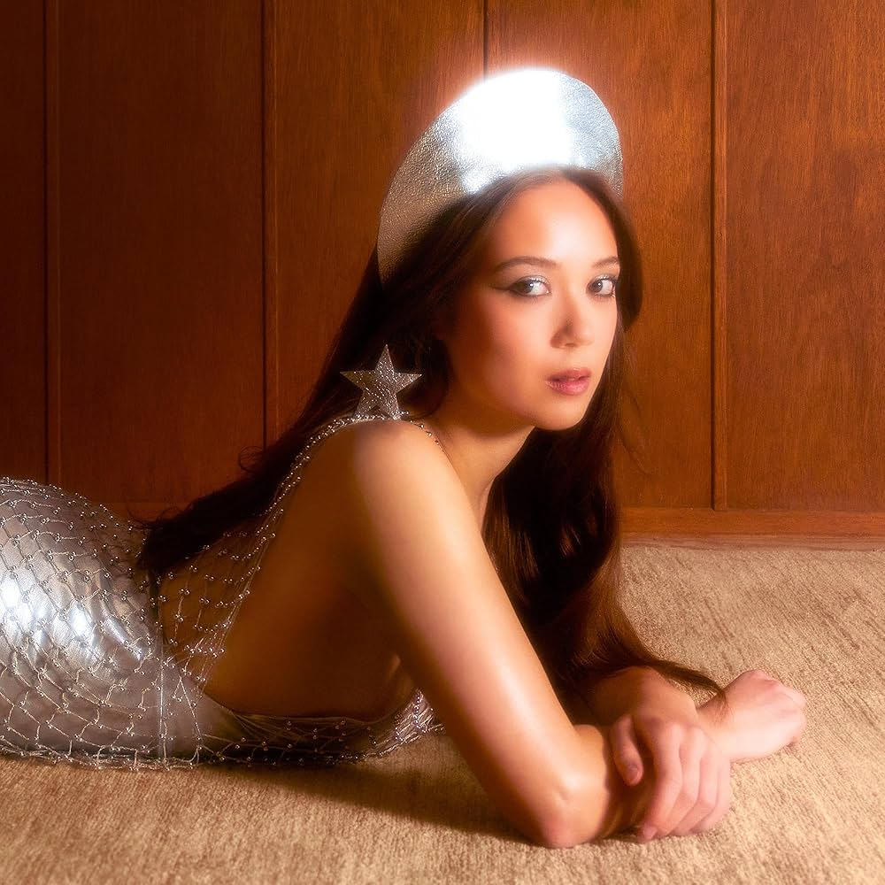
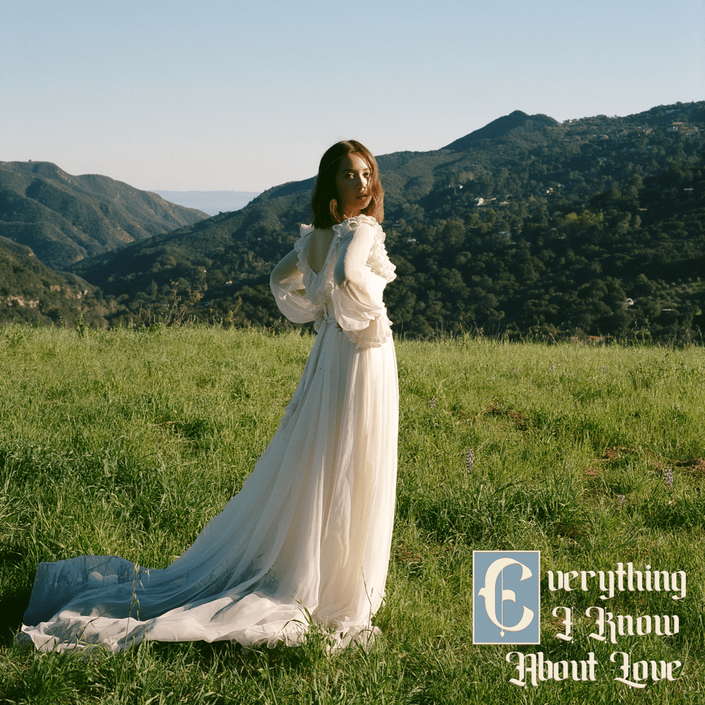
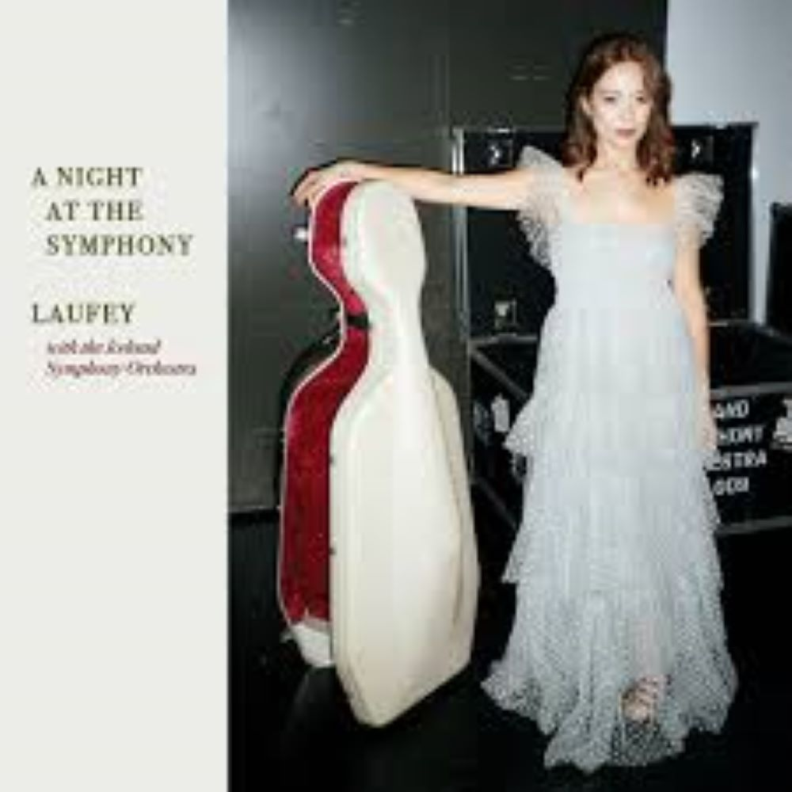
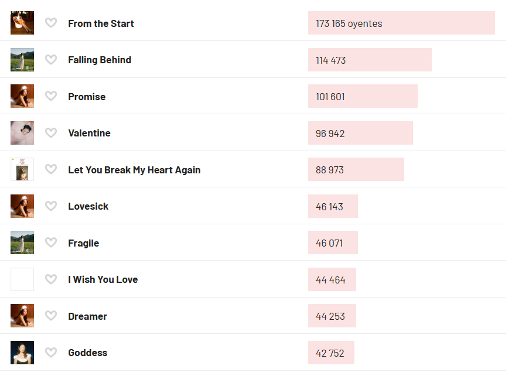

Bibliografía
Laufey Lín Bing Jónsdóttir, conocida artísticamente como Laufey, es una cantautora islandesa nacida el 23 de abril de 1999 en Reikiavik. Hija de padre islandés y madre de origen chino.
Desde temprana edad, se interesó fuertemente por la música, influenciada por su madre violinista y su abuelo, Lin Yaoji, un reconocido profesor de violín en el Conservatorio Central de Música de China. Laufey comenzó a aprender a tocar el piano a la edad de cuatro años, y el violonchelo a los ocho años, demostrando un gran talento musical.
A los 15 años debutó como solista con la Orquesta Sinfónica de Islandia y participó en concursos como Ísland Got Talent y The Voice Iceland.
Después de la secundaria, Laufey y su hermana gemela fueron aceptadas en la Universidad de St Andrews en Escocia, donde ella tenía la intención de estudiar economía. Sin embargo, asistió a Berklee College of Music en los Estados Unidos después de recibir una beca presidencial y se graduó en 2021.
A partir de octubre de 2023, se encuentra residiendo en la ciudad de Los Ángeles, California. Donde se ha enfocado principalmente en su carrera como cantante y compositora.
Carrera Musical
Laufey lanzó su sencillo debut, "Street by Street" en 2019, que alcanzó el número uno en la radio islandesa. Posteriormente, en abril de 2021, lanzó su primer EP, "Typical of Me", logrando cultivar una experiencia cálida y nostálgica con tan solo siete canciones. La revista estadunidense Rolling Stone elogió especialmente su interpretación en "I Wish You Love".
En diciembre de este mismo año, Laufey colaboró con el cantante islandés Dodie para lanzar otro sencillo "Love to Keep Me Warm".
El 26 de agosto de 2022, Laufey lanzó su primer álbum de estudio, "Everything I Know About Love", recibiendo elogios de la crítica y el público. En la lista de Álbumes de Nuevos Artistas Alternativos de Billboard, el álbum alcanzó el número uno en su debut.
En agosto de 2023, se anunció que Laufey había firmado un contrato editorial global con Warner Chappell Music (WCM). Su segundo álbum, Bewitched, se lanzó el 8 de septiembre de ese mismo año. Recibió una aclamación crítica y le valió a Laufey su primer premio Grammy, al Mejor Álbum Vocal Pop Tradicional en la 66.ª edición de los Premios Grammy, donde actuó con Billy Joel en su número de cierre, "Turn the Lights Back On".
Influencias y estilo musical
Laufey ha citado a artistas como Norah Jones, Amy Winehouse, Billie Holiday, Frank Sinatra, y Chet Baker como sus principales influencias musicales.
Su estilo musical ha sido objeto de debate, pero ella lo describe como jazz o jazz pop. Por otro lado, organizaciones como la Radio Pública Nacional, el York Times y Sydney Morning Herald han señalado que su música incluye elementos de jazz, pop, bossa nova y música clásica, describiendo la totalidad como pop tradicional o pop de la vieja escuela debido a la fusión de estilos en sus canciones.
Discografía
| Álbumes de estudio | Sencillos / EPs |
|---|---|
| Bewitched | Street by Street |
| Everything I Know About Love | Promise |
| A Night At The Symphony | From the Start |
| Goddess | Valentine |
| Love to Keep Me Warm | |
| Love Flew Away | |
| Let You Break My Heart Again | |
| Typical of Me | |
| Someone New | |
| The Reykjavík Sessions | |
| A Very Laufey Holiday |



Temas más escuchados

Álbum más popular
Everything I Know About Love es el álbum debut de la cantante y compositora islandesa-china Laufey, lanzado el 26 de agosto de 2022. El álbum fusiona elementos de jazz, pop, y soul, creando un sonido retro y moderno a la vez.
Laufey lo describió como "desesperadamente romántico" y de crecimiento personal. Dijo que las canciones se basaban en sus experiencias, pero fueron escritas como si fueran ficción, y que intenta crear magia a partir de momentos difíciles o sombríos.
Canciones como "Valentine" y "Falling Behind" destacan por su lirismo poético y la influencia del jazz clásico.
Everything I Know About Love (2022)
Lista de canciones:
- Fragile
- Beautiful Stranger
- Valentine
- Above The Chinese Restaurant
- Dear Soulmate
- What Love Will Do to You
- I've Never Been In Love Before
- Just Like Chet
- Everything I Know About Love
- Falling Behind
- Hi
- Dance With You Tonight
- Night Light